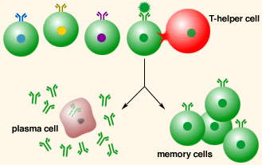
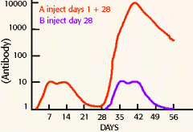
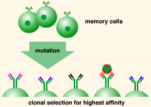

| Tutorial to help you answer the question:
The clonal selection theory of antibody diversity says:
| A. |
B cell precursors randomly rearrange variable
coding parts of antibody genes. Afterwards, antigen binds
to a clone with specific membrane antibody, resulting in differentiation
to antibody secreting plasma cells |
| B. |
The antigen causes a nonspecific clone
of B lymphocytes to proliferate and secrete antibody molecules
capable of binding to any foreign antigen |
|
C. |
Antigen causes the growth of a clone of
lymphocytes which then rearrange DNA, creating a gene coding
for a specific antibody |
| D. |
A clone of macrophages with specific receptor
for antigen phagocytoses antigen, then rearranges DNA to generate
specific antibody-coding genes |
Tutorial
Clonal selection and immunological memory
|
Clonal selection theory illustrates how immunological memory
permits a rapid response upon a second exposure to an antigen.
Immunological memory is the basis of natural immunity and
artificial immunity (from vaccinations).
Each B cell has a specific antibody as a cell
surface receptor. The arrangement and generation of antibody
genes occurs prior to any exposure to antigen. When a soluble
antigen is present, it binds to the antibody on the surface
of B cells that have the correct specificity. These B cell
clones develop into antibody-producing plasma cells or memory
cells. Only B cells, which are antigen-specific, are capable
of secreting antibodies.
|
|

|
|
Following initial exposure to antigen, the plasma cells stop
producing antibody and die. Memory cells remain in greater
numbers than the initial B cells, allowing the body to quickly
respond to a second exposure of that antigen.
|
|  |
The body can make low levels of soluble antibody about one
week after exposure to antigen. However, a second exposure to
antigen produces a much faster response, and several orders
of magnitude higher levels of antibody. The ability of antibody
to bind antigen also increases in the secondary response. The
memory of antigen and stimulated response is the basis for vaccination. |
| A secondary immune response (second exposure to an antigen)
is not only faster but produces antibody with up to a 10,000
fold increase in binding affinity. This higher affinity comes
from a mechanism that alters the variable regions of light and
heavy chains of the memory cells by specific somatic mutation.
This is a random process that by chance can improve antigen
binding. |
|

|
| The system makes a mutation for each two cell divisions. Re-exposure
to antigen is most likely to cause clonal expansion of memory
cells which produce the highest affinity antibody. The mutations
which lead to increased affinity will be clonally selected by
antigen similarly to the primary response. Cells with inactive
antibody will die by apoptosis from a lack of T cell signaling. |
|